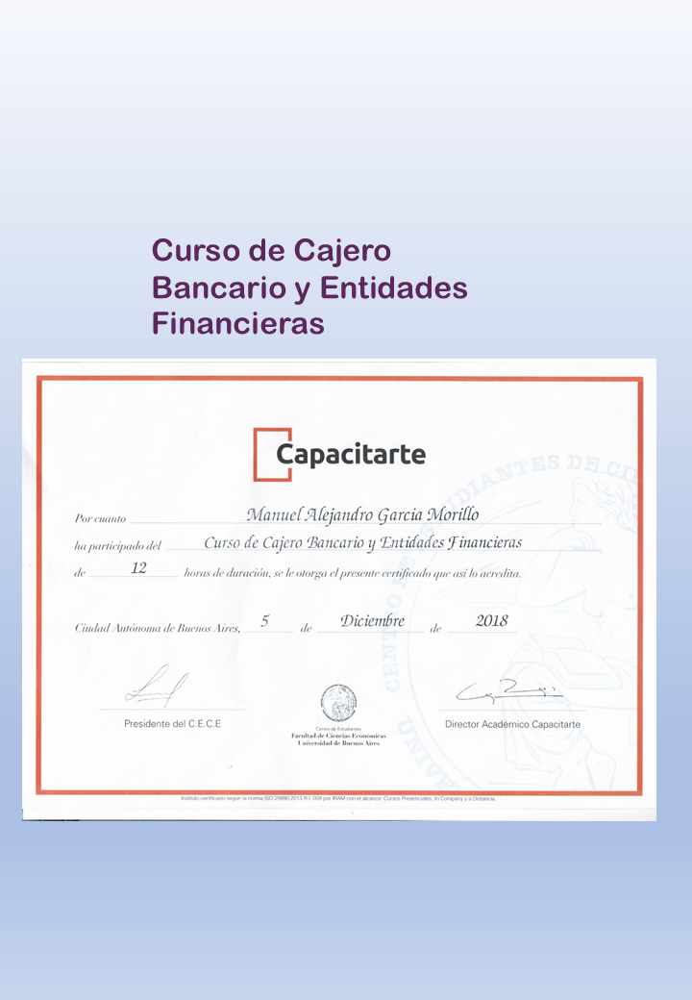
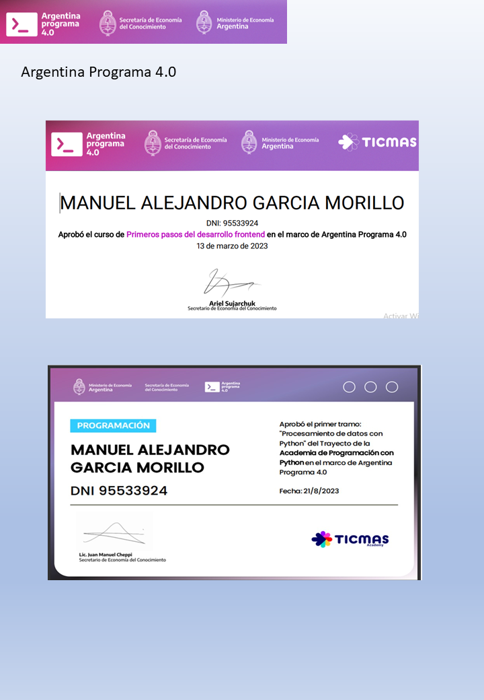
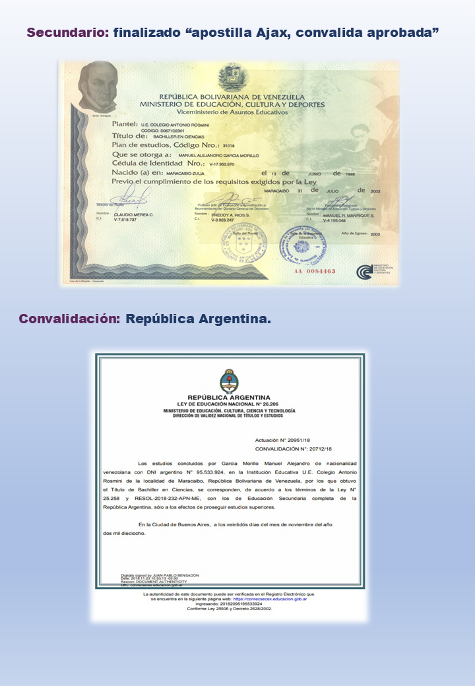

NOV 2024 — MAR 2026Caja y atención
Electro_Outlet
Cajero y atención al público
CURRÍCULUM VITAE · BUENOS AIRES
Experiencia en cobros, manejo de efectivo y divisas. Un perfil que combina atención al público y herramientas digitales.
Experiencia comercial · Formación certificada
Villa Ortúzar, CABA, Argentina
La experiencia detrás
de cada atención.
01 / TRAYECTORIA
Mi recorrido en comercios y servicios, con experiencia en caja, atención al cliente y manejo de divisas.
Cajero y atención al público
Ayudante técnico de refrigeración
Cajero y manejo de divisas
Cajero y atención al cliente
Analista de datos junior
Cajero y atención al cliente
02 / HABILIDADES
Conocimientos que acompañan mi experiencia y el trabajo de todos los días.
Manejo de caja y efectivo. Operación con pesos, dólares, euros y reales.
Atención y asesoramiento al cliente. Recepción de mercadería, orden y reposición de góndolas.
Manejo de sistemas CRM, Microsoft Office y herramientas informáticas.
03 / FORMACIÓN
Formación en caja bancaria, secundario convalidado en Argentina y capacitación en tecnología.
Capacitarte UBA
Curso finalizadoU. E. Colegio Antonio Rosmini, Venezuela.
Secundario completo convalidado en Argentina.Primeros pasos del desarrollo frontend.
Procesamiento de datos con Python, primer tramo.
04 / CERTIFICADOS
Consultá los documentos que acompañan mi trayectoria. Podés ampliarlos o descargarlos.

Ver documentoCapacitarte · UBA · 2018
12 horas de formación en caja bancaria y entidades financieras.
Descargar comprobante
Ver documentoArgentina Programa 4.0 · Ticmas · 2023
Primeros pasos del desarrollo frontend y primer tramo de procesamiento de datos con Python.
Descargar comprobante
Ver documentoTítulo y convalidación argentina · 2018
Educación secundaria completa. Convalidación emitida en la República Argentina.
Descargar comprobante05 / CONTACTO
¿Tenés una oportunidad en caja o atención al cliente? Escribime y conversemos.
Hablemos por WhatsAppVilla Ortúzar · Ciudad Autónoma de Buenos Aires